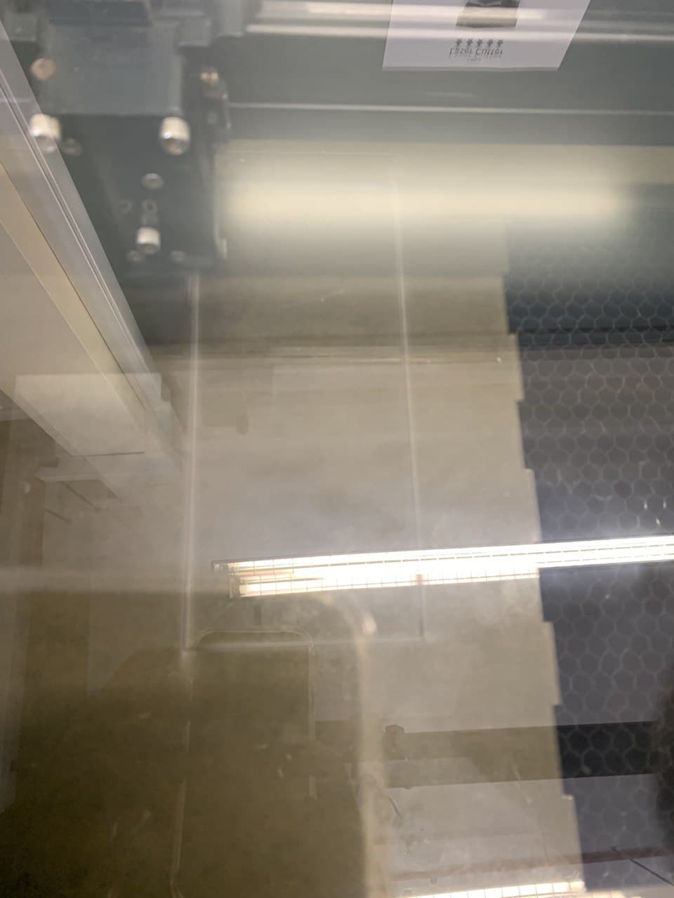

Final Project
MOOD LAMP
Mood lamp is a lighting devices that are used to establish a particular feeling or mood within a room. In some cases, this type of lamp may be a small device that is plugged into an outlet and creates points of light near the floor line of the room.
Mood lighting differ somewhat from other lamps in that their purpose is not so much practical as aesthetic. Reading lamps for example tend to provide bright light to a given space in order to make it possible to read a book or magazine without creating strain on the eyes.
Features
-bright enought to double as a table lamp
-change of light color with a touch of a touch button
Technique involved
-3D printing will be used to make the holder/container for arduino.
-lazer cuting will be used to cut the cover for the neopixel.
Material used
-Arduino nano
-Neopixel
-Touch button
-power supply
Ideation
sketch of how the lamp would look like
As I had idea of how the mood lamp can double as a table lamp, hence a taller body is made as that way more lights can be luminated to the surrounding.
Making
Cutting of acrylic to make the body for the neopixel
Each piece of acrylic is join together using acrylic glue, the acrylic is hold by a try square to ensure that it is 90 degree and all four pieces can be glued together. The use of acrylic glue requires fast hands as it evaporates at a very fast rate.
Cutting of mirror acrylic for the top cover

3D printing the base cover of the lamp
Finished product